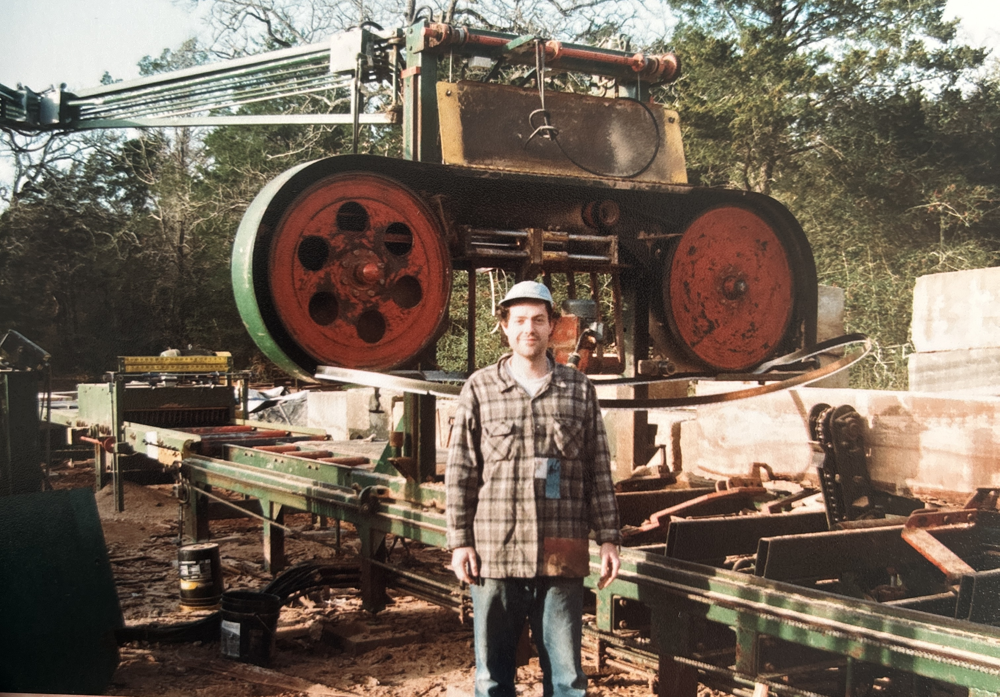
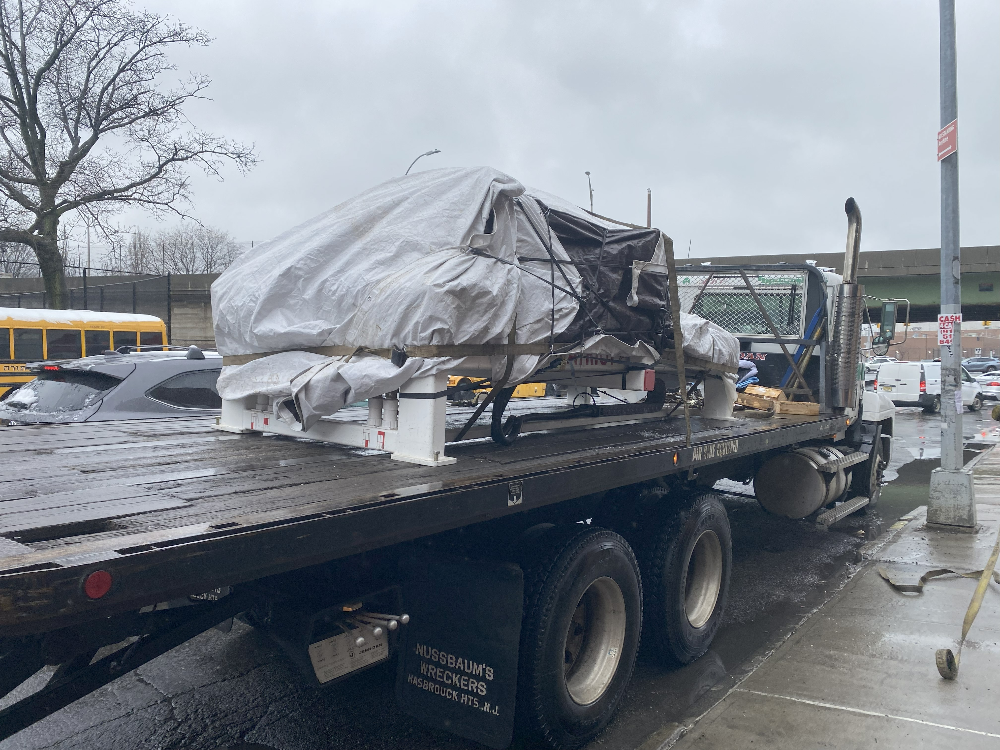
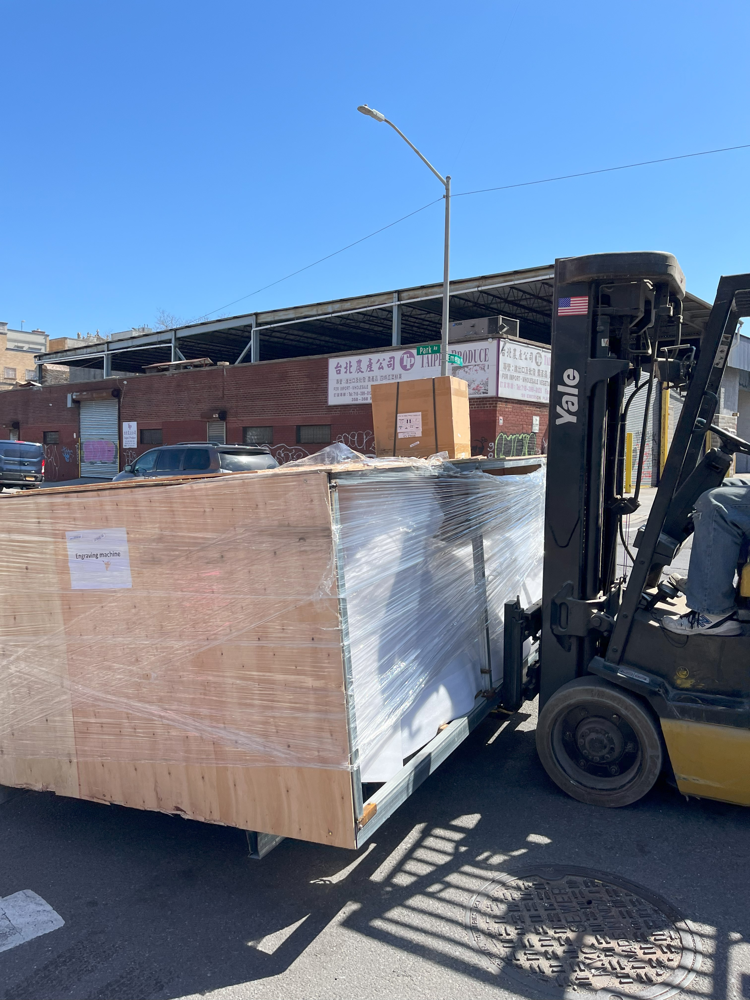

Here are photos of large equipment or CNC machines I've set up for service, or packed up for moving.
Standing in front of The Breezewood at Berdoll Sawmill
In my younger years I helped install, maintain, and run vintage and custom machinery such as this back in Texas while working for Brandon Berdoll at Berdoll Sawmill.

Here are photos of CNC machines I've set up for service, or packed up for moving
In order: packing up a freedom patriot (the detail is really in how you protect the lead screw), freedom patriot resting under tarpaulin on a rainy day in brooklyn on freightliner, laser cutter arrives at local business!

I can put them on trucks or take them off!
 